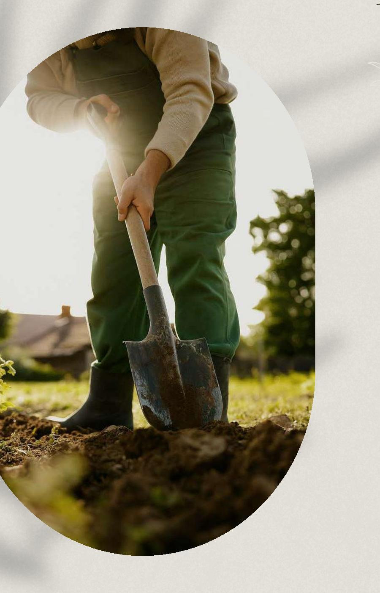
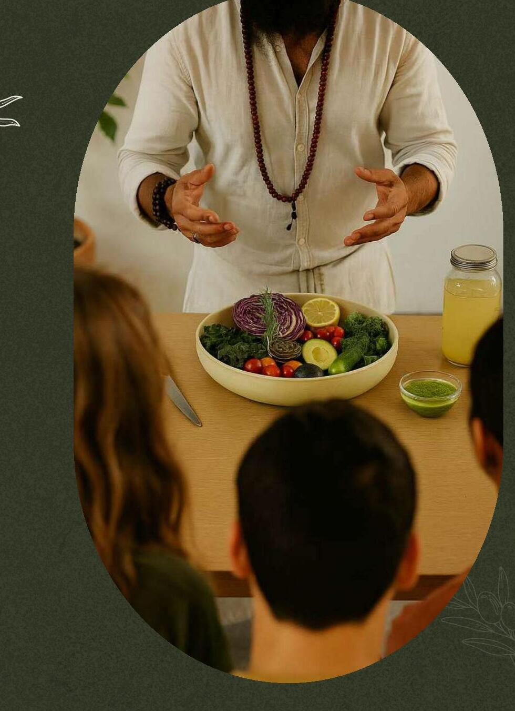
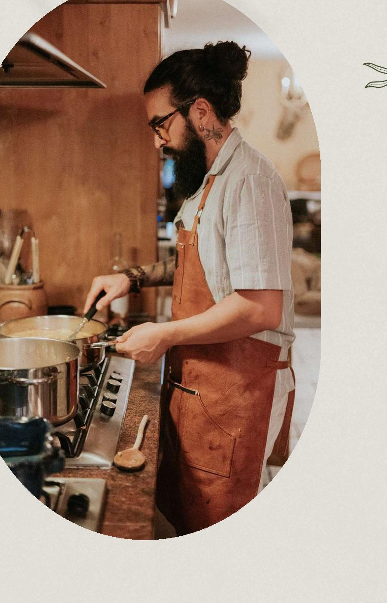
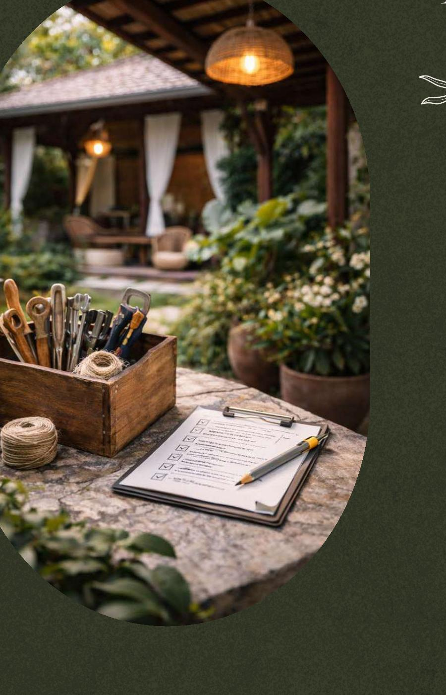

The Living Ecosystem
The work of Green Root Concepts moves through four living expressions — each a reflection of how nourishment regenerates life.

01 · Regenerative Systems
We address soil degradation, water scarcity, and food insecurity by transforming neglected land into self-sustaining permaculture systems — living ecosystems that produce nutrient-dense food, restore biodiversity, and generate abundance through diverse streams like organic produce, workshops, and eco-tourism.
Unlike conventional farming models, our designs capture rainwater, rebuild soil fertility, and operate on circular principles — where every output nourishes the next cycle.
Offerings

02 · Food as Medicine
Food as Medicine is Dali's educational platform dedicated to re-teaching the fundamentals of human nourishment — through evidence-based nutrition, regenerative agriculture, and embodied culinary practice. Dali guides participants to understand the full food system, from soil health to cellular health.
His curriculum blends hard science with lived wisdom: blood sugar regulation, mineral balance, gut–brain communication, and food energetics.
Offerings

03 · Conscious Cooking
Dali's applied culinary practice — where regenerative principles and metabolic science meet sensuality, creativity, and taste. Every kitchen he steps into — from intimate private dinners to large-scale retreats — Dali designs experiences that restore the nervous system, stabilize blood sugar, and ignite connection through food.
Beyond the plate, Conscious Cooking is a systems-based philosophy — one that redefines luxury through transparency, sustainability, and impact.
Offerings

04 · Property Stewardship
Property stewardship is approached as an extension of care — tending to spaces with the same intention, precision, and awareness as land and food. Dali oversees all aspects of property operations, ensuring each environment functions seamlessly and is held to the highest standard.
Rooted in attentiveness and integrity, his approach creates spaces that feel both effortless and alive.
Offerings